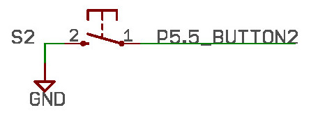
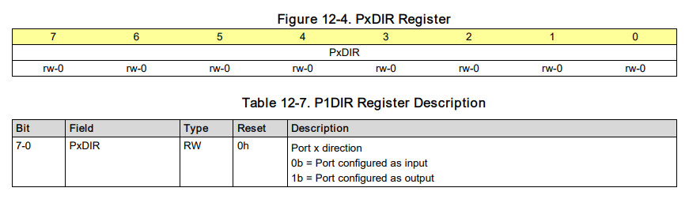
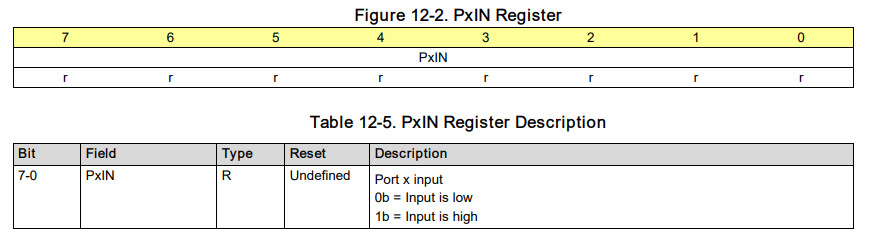
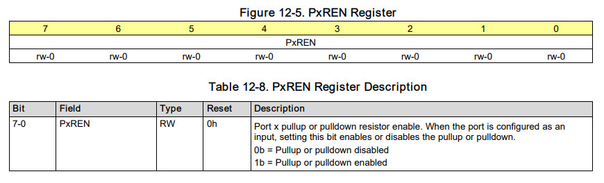
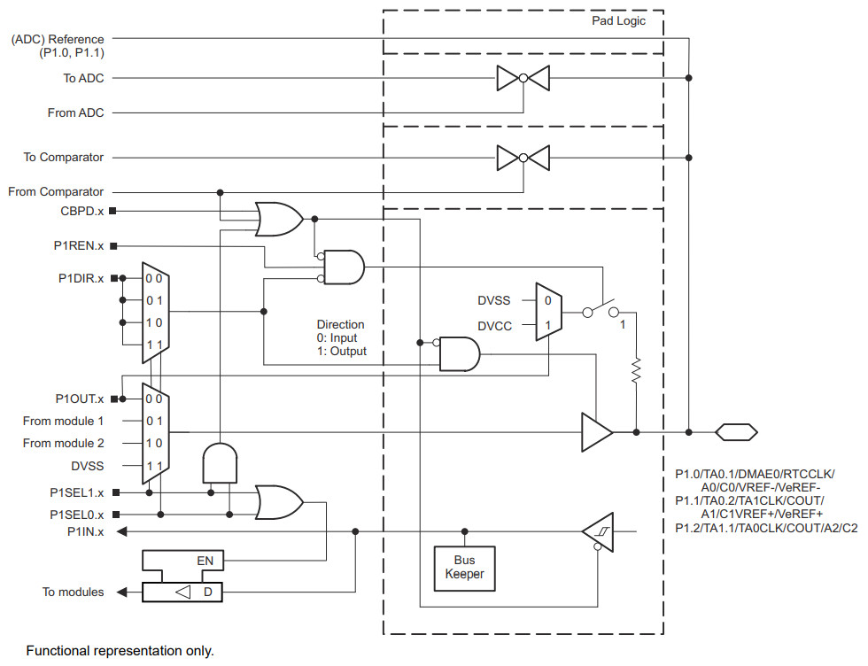
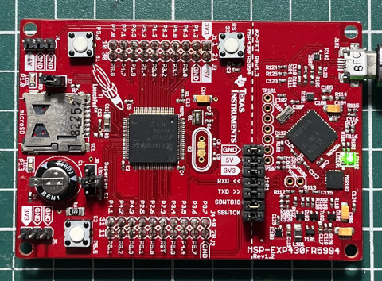
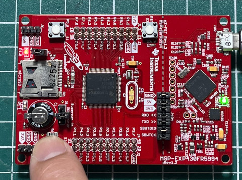

參考資訊：
https://github.com/dlbeer/mspdebug
https://www.ti.com/lit/ds/symlink/msp430fr5994.pdf
https://www.ti.com/tool/MSP430-GCC-OPENSOURCE#downloads
https://www.reddit.com/r/embedded/comments/rbsuf9/struggling_to_get_timestamps_on_an_msp430fr5994/
https://vivonomicon.com/2018/11/22/bare-metal-msp430-programming-working-with-new-microcontrollers/
S2按鍵是連接到P5.5





#include <msp430fr5994.h>
int main(void)
{
WDTCTL = WDTPW + WDTHOLD;
PM5CTL0 &= ~LOCKLPM5;
P1DIR = BIT0;
P5REN = BIT5;
P5OUT = BIT5;
while (1) {
P1OUT = ~(P5IN >> 5);
}
}
完成

